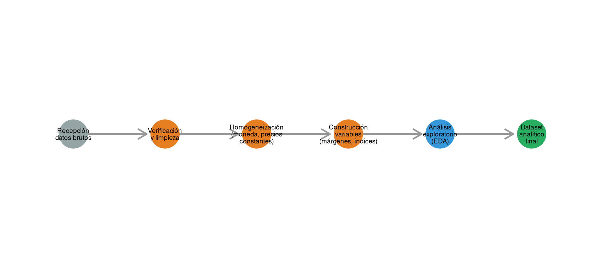
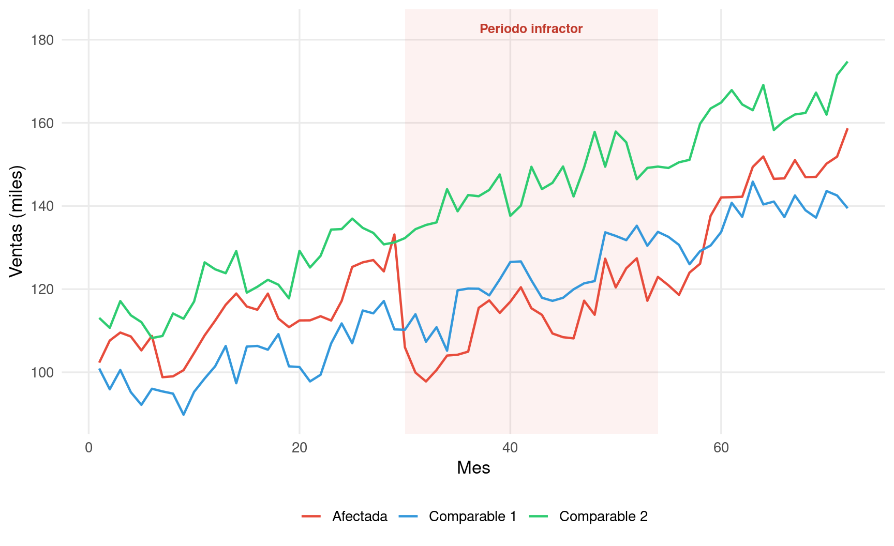
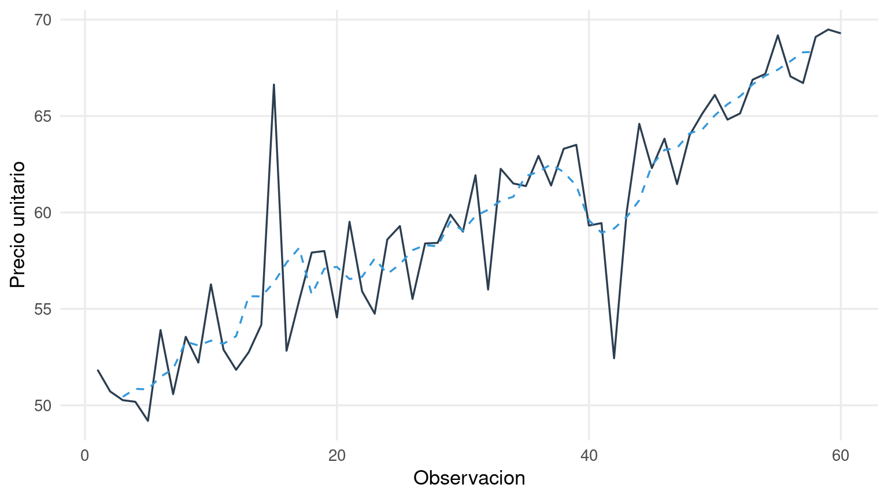

4.1 Los datos como materia prima del informe pericial
Ningún modelo econométrico, por sofisticado que sea, puede compensar la insuficiencia o la mala calidad de los datos sobre los que se construye. Esta afirmación, que en un contexto académico resultaría trivial, adquiere una relevancia crítica en la práctica pericial, donde el perito rara vez dispone de los datos ideales y casi siempre debe trabajar con la información que las partes le proporcionan, que los tribunales le permiten obtener y que las circunstancias del caso hacen disponible.
En más de veinticinco años de ejercicio profesional, he llegado a la convicción de que la fase de recopilación y preparación de datos es, con frecuencia, la que más tiempo consume y la que mayor impacto tiene sobre la calidad final del informe. Un perito experimentado dedica a esta fase tanto esfuerzo como al análisis econométrico propiamente dicho, porque sabe que un error en los datos —una serie mal deflactada, una variable mal codificada, un período contaminado que no se ha excluido— se propagará a lo largo de todo el análisis y contaminará los resultados de forma silenciosa.
Este capítulo aborda las cuestiones prácticas que todo perito debe resolver antes de abrir R: de dónde obtener los datos, cómo evaluarlos, cómo prepararlos y cómo explorarlos con una orientación específica hacia la cuantificación de daños.
4.2 Fuentes de datos en procedimientos de daños
Las fuentes de datos disponibles en un procedimiento de daños varían enormemente según el tipo de caso, la jurisdicción y la fase procesal. No obstante, pueden agruparse en varias categorías que el perito debe conocer y explorar de forma sistemática.
4.2.1 Datos contables y financieros de las partes
La fuente más directa y habitualmente más rica es la información contable y financiera de las empresas involucradas en el procedimiento. Las cuentas anuales, los informes de gestión, la contabilidad analítica, los presupuestos, las proyecciones internas y los informes de auditoría proporcionan información sobre ingresos, costes, márgenes, volúmenes de ventas, cuotas de mercado y rentabilidad que resulta esencial para la mayoría de los métodos de cuantificación.
Sin embargo, el acceso a esta información no está garantizado. La víctima suele facilitar sus propios datos con relativa disposición, pero obtener información de la parte contraria puede requerir mecanismos procesales de exhibición documental (disclosure o discovery) que no siempre están disponibles o que el tribunal concede de forma limitada. La Directiva 2014/104/UE ha mejorado significativamente esta situación en el ámbito europeo al establecer, en sus artículos 5 a 8, un régimen específico de exhibición de pruebas en los procedimientos por daños antitrust, aunque la implementación nacional varía.
El perito debe ser consciente de las limitaciones de los datos contables. La contabilidad general no siempre refleja la realidad económica con la granularidad que el análisis requiere. Los costes pueden estar asignados de forma arbitraria entre divisiones o productos. Los ingresos pueden incluir operaciones extraordinarias que distorsionan la serie temporal. Las normas contables pueden haber cambiado durante el período analizado, generando rupturas artificiales en las series.
4.2.2 Datos sectoriales y de mercado
Los datos agregados del sector proporcionan un contexto indispensable para la cuantificación. La evolución del mercado en su conjunto permite distinguir entre variaciones atribuibles a la conducta ilícita y variaciones que obedecen a tendencias generales del sector. Si las ventas de la víctima cayeron un 20% durante el período infractor, pero el mercado en su conjunto se contrajo un 12%, la caída diferencial del 8% constituye una primera aproximación al efecto de la infracción.
Las fuentes de datos sectoriales incluyen asociaciones empresariales, organismos reguladores, institutos estadísticos nacionales (INE, Eurostat), bases de datos comerciales (Nielsen, IRI, Bloomberg, Orbis) y publicaciones especializadas. En los mercados regulados —telecomunicaciones, energía, transporte—, los reguladores sectoriales suelen publicar informes periódicos con datos detallados de precios, volúmenes y cuotas de mercado.
4.2.3 Datos de precios y transacciones
Para la estimación de sobreprecios en casos de cárteles, los datos de transacciones individuales son particularmente valiosos. Cada transacción registra un precio, una cantidad, un comprador, un vendedor, una fecha y, con frecuencia, las características del producto. Esta granularidad permite estimar modelos de precios hedónicos que controlan las diferencias de calidad y especificaciones entre productos, aislando con mayor precisión el efecto del cártel sobre los precios.
Cuando no se dispone de datos de transacciones individuales, el perito puede recurrir a precios medios por período, por producto o por cliente. La pérdida de granularidad reduce la precisión de la estimación pero no la impide, siempre que el nivel de agregación sea apropiado para el método empleado.
4.2.4 Datos públicos y bases de datos institucionales
Las bases de datos públicas constituyen un recurso que el perito no debe desdeñar. Los registros mercantiles, las cuentas anuales depositadas, las estadísticas oficiales de comercio exterior, los índices de precios sectoriales, los datos macroeconómicos del INE o del Banco de España y las bases de datos europeas (Eurostat, AMECO) proporcionan información que puede servir como variable de control, como base para la selección de comparables o como referencia para la construcción del escenario contrafactual.
Code
tibble(Fuente =c("Contabilidad de las partes","Datos de transacciones","Datos sectoriales (asociaciones, reguladores)","Bases de datos comerciales (Orbis, Bloomberg)","Registros mercantiles / cuentas anuales","Estadísticas oficiales (INE, Eurostat)","Datos macroeconómicos (BCE, BdE)" ),`Utilidad principal`=c("Ingresos, costes, márgenes, proyecciones","Precios individuales, modelos hedónicos, sobreprecio","Contexto de mercado, tendencias, cuotas","Comparables financieros, ratios sectoriales","Selección de comparables, verificación","Variables de control macro/sectoriales","Deflactores, tipos de interés, ciclo económico" ),Limitaciones =c("Acceso limitado a datos de la contraparte; granularidad variable","Rara vez disponibles; confidencialidad comercial","Nivel de agregación puede ser excesivo","Coste de acceso; cobertura geográfica variable","Solo datos agregados; desfase temporal","Alta agregación; no específicos del caso","Solo útiles como controles, no como variable principal" )) |>kbl(booktabs =TRUE, escape =FALSE) |>kable_styling(latex_options =c("hold_position", "scale_down"),full_width =TRUE, font_size =9) |>column_spec(1, bold =TRUE, width ="3.5cm") |>column_spec(2, width ="5cm") |>column_spec(3, width ="5cm")
Table 4.1: Principales fuentes de datos para la cuantificación de daños, con indicación de su utilidad y limitaciones
Fuente
Utilidad principal
Limitaciones
Contabilidad de las partes
Ingresos, costes, márgenes, proyecciones
Acceso limitado a datos de la contraparte; granularidad variable
Solo útiles como controles, no como variable principal
4.3 Evaluación de la calidad de los datos
Antes de utilizar cualquier dato en el análisis, el perito debe someterlo a una evaluación crítica de calidad. Esta evaluación no es un paso opcional: es una obligación profesional cuyo incumplimiento puede invalidar todo el informe. He presenciado procedimientos en los que un informe pericial fue descartado por el tribunal porque la contraparte demostró que los datos de base contenían errores que el perito no había detectado —facturas duplicadas, períodos mal codificados, precios en monedas diferentes sin convertir.
La evaluación de calidad debe abordar, como mínimo, las siguientes dimensiones.
La completitud se refiere a si los datos cubren todo el período y todas las entidades relevantes para el análisis. Las lagunas temporales —meses sin datos, trimestres con información parcial— deben identificarse y tratarse explícitamente. La ausencia de datos para determinadas empresas del grupo de comparación puede introducir un sesgo de selección si las empresas ausentes difieren sistemáticamente de las presentes.
La consistencia exige verificar que las definiciones y los criterios de medición son homogéneos a lo largo del tiempo y entre entidades. Un cambio en los criterios contables, una modificación en la definición del mercado relevante o una reestructuración societaria que altere el perímetro de consolidación pueden generar discontinuidades artificiales en las series que el perito debe identificar y corregir.
La fiabilidad implica evaluar si los datos provienen de fuentes creíbles y si han sido sometidos a algún proceso de verificación. Los datos auditados merecen mayor confianza que las estimaciones internas no verificadas. Los datos oficiales de organismos reguladores son preferibles a las autoevaluaciones de las partes.
La granularidad determina el nivel de detalle disponible. Para estimar un sobreprecio, los datos de transacciones individuales son preferibles a los precios medios mensuales. Para estimar un lucro cesante, los márgenes por producto o línea de negocio son preferibles a los márgenes agregados de la empresa. El perito debe trabajar con el mayor nivel de granularidad disponible, pero siendo consciente de que la granularidad excesiva puede introducir ruido cuando el tamaño muestral es reducido.
4.4 Preparación y limpieza de datos con R
La preparación de datos es la fase donde se traduce la información bruta en un dataset analítico limpio y estructurado. En la práctica pericial, esta fase consume una proporción considerable del tiempo de trabajo y requiere una atención al detalle que no siempre se refleja en el informe final pero que es determinante para la calidad de los resultados.
El ecosistema tidyverse de R proporciona un conjunto de herramientas coherente y expresivo para esta tarea. Sin pretender un manual completo de tidyverse —para eso existen obras de referencia excelentes—, conviene ilustrar las operaciones más habituales en el contexto de la cuantificación de daños.
Code
etapas <-tibble(x =1:6,y =rep(0, 6),etapa =c("Recepción\ndatos brutos", "Verificación\ny limpieza", "Homogeneización\n(moneda, precios\nconstantes)","Construcción\nvariables\n(márgenes, índices)","Análisis\nexploratorio\n(EDA)", "Dataset\nanalítico\nfinal"),color =c("#95a5a6", "#e67e22", "#e67e22", "#e67e22", "#3498db", "#27ae60"))ggplot(etapas) +geom_segment(aes(x = x, xend = x +0.8, y = y, yend = y),data = etapas |>filter(x <6),arrow =arrow(length =unit(0.15, "inches")),color ="grey60", linewidth =0.8) +geom_point(aes(x = x, y = y, color = color), size =14) +geom_text(aes(x = x, y = y, label = etapa), size =2.5, lineheight =0.9) +scale_color_identity() +coord_cartesian(xlim =c(0.5, 6.5), ylim =c(-0.5, 0.5)) +theme_void()

Figure 4.1: Flujo de trabajo típico en la preparación de datos para un informe pericial de daños
4.4.1 Importación y verificación
El primer paso consiste en importar los datos y verificar que la lectura ha sido correcta. Los datos periciales suelen llegar en formatos heterogéneos —hojas de cálculo Excel con múltiples pestañas, ficheros CSV con codificaciones diversas, extractos de bases de datos en formatos propietarios— y es frecuente que la importación introduzca errores si no se supervisa cuidadosamente.
Code
# Ejemplo de importación y verificación inicialdatos_ventas <- readxl::read_excel("data/ventas_empresa.xlsx",sheet ="mensual",col_types =c("date", "text", "numeric", "numeric", "numeric")) |> janitor::clean_names() |>mutate(fecha =as.Date(fecha), año =year(fecha),mes =month(fecha) )# Verificaciones básicasstopifnot(nrow(datos_ventas) >0,!any(is.na(datos_ventas$fecha)),all(datos_ventas$ingresos >=0, na.rm =TRUE),n_distinct(datos_ventas$fecha) ==nrow(datos_ventas) # sin duplicados)# Resumen de la estructuraglimpse(datos_ventas)summary(datos_ventas)
4.4.2 Deflactación y homogeneización
Cuando el análisis abarca varios años, los valores monetarios deben expresarse en términos reales (precios constantes) para evitar que la inflación distorsione las comparaciones intertemporales. La deflactación es especialmente relevante en la estimación de sobreprecios y lucros cesantes, donde una evolución nominal al alza podría enmascarar una caída en términos reales.
Code
# Deflactación con IPC (ejemplo con datos del INE)ipc <-tibble( año =2015:2025,indice_ipc =c(100, 99.8, 101.4, 103.2, 104.0, 103.5, 106.9, 115.5, 119.4, 123.1, 125.8))datos_reales <- datos_ventas |>left_join(ipc, by ="año") |>mutate(ingresos_reales = ingresos *100/ indice_ipc,precio_real = precio_unitario *100/ indice_ipc )
4.4.3 Construcción de variables derivadas
El análisis de daños requiere con frecuencia variables que no están directamente disponibles en los datos brutos sino que deben construirse a partir de ellos. Los márgenes de contribución, las cuotas de mercado, las tasas de crecimiento, los índices de precios relativos y las variables indicadoras del período infractor son ejemplos habituales.
Code
# Construcción de variables para el análisis de dañosdatos_analisis <- datos_reales |>mutate(# Margen de contribuciónmargen_contribucion = ingresos_reales - costes_variables,margen_pct = margen_contribucion / ingresos_reales *100,# Indicadora del período infractorperiodo_infractor =if_else(fecha >=as.Date("2018-03-01") & fecha <=as.Date("2022-06-30"), 1, 0),# Tasa de crecimiento interanualtasa_crecimiento = (ingresos_reales /lag(ingresos_reales, 12) -1) *100 )
4.5 Análisis exploratorio orientado a daños
El análisis exploratorio de datos (EDA) no es, en el contexto pericial, un ejercicio genérico de descripción estadística. Es una fase con un propósito específico: identificar patrones, anomalías y rupturas en los datos que orienten la selección del método de cuantificación y que permitan detectar problemas antes de que contaminen la estimación.
Un EDA orientado a daños debe responder a varias preguntas concretas. ¿Se observa una ruptura visible en la serie temporal alrededor de la fecha de la infracción? ¿Existen tendencias preexistentes que deban incorporarse al modelo? ¿Hay valores atípicos que puedan distorsionar la estimación? ¿La estacionalidad es estable o ha cambiado durante el período analizado? ¿Los comparables seleccionados muestran evoluciones similares a la víctima en el período previo a la infracción?
Code
set.seed(303)n <-72# 6 años mensualest <-1:nt_inicio <-30t_fin <-54# Empresa afectadabase_afectada <-100+0.8* t +6*sin(2* pi * t /12)efecto <-rep(0, n)efecto[t_inicio:t_fin] <--20efecto[(t_fin+1):n] <--20*exp(-0.12* ((t_fin+1):n - t_fin))ventas_afectada <- base_afectada + efecto +rnorm(n, 0, 3)# Comparable 1 (misma tendencia, sin efecto)ventas_comp1 <-90+0.75* t +5*sin(2* pi * t /12) +rnorm(n, 0, 3)# Comparable 2 (similar, ligeramente diferente)ventas_comp2 <-110+0.85* t +4*sin(2* pi * (t +2) /12) +rnorm(n, 0, 3.5)df_eda <-tibble(mes = t) |>mutate(Afectada = ventas_afectada,`Comparable 1`= ventas_comp1,`Comparable 2`= ventas_comp2 ) |>pivot_longer(-mes, names_to ="empresa", values_to ="ventas")ggplot(df_eda, aes(x = mes, y = ventas, color = empresa)) +annotate("rect", xmin = t_inicio, xmax = t_fin, ymin =-Inf, ymax =Inf,fill ="#e74c3c", alpha =0.07) +geom_line(linewidth =0.8) +annotate("text", x = (t_inicio + t_fin) /2, y =max(ventas_comp2) +8,label ="Periodo infractor", size =3.3, fontface ="bold", color ="#c0392b") +scale_color_manual(values =c("Afectada"="#e74c3c", "Comparable 1"="#3498db","Comparable 2"="#2ecc71")) +labs(x ="Mes", y ="Ventas (miles)", color =NULL) +theme_minimal(base_size =13) +theme(legend.position ="bottom", panel.grid.minor =element_blank())

Figure 4.2: Análisis exploratorio: evolución temporal de ventas de la empresa afectada y dos comparables, con indicación del período infractor. La ruptura en la serie de la empresa afectada es visible, mientras que los comparables mantienen su tendencia.
La Figure 4.2 ilustra un patrón frecuente en la práctica. La empresa afectada (rojo) muestra una evolución similar a los comparables antes del período infractor, una caída brusca durante la infracción y una recuperación gradual posterior. Los comparables (azul y verde) mantienen su tendencia ascendente sin perturbaciones. Esta divergencia visible entre la serie afectada y las series de control es un primer indicio gráfico del daño, que el análisis econométrico posterior cuantificará con precisión.
4.5.1 Detección de valores atípicos
Los valores atípicos (outliers) merecen una atención especial en el contexto pericial. Un valor extremo puede ser el resultado de un error de registro —una factura mal imputada, un período con una operación extraordinaria— o puede reflejar un fenómeno económico real que el modelo debe capturar. La decisión de excluir o mantener un outlier debe estar fundamentada y documentada, porque la contraparte cuestionará cualquier exclusión que favorezca al demandante y cualquier inclusión que lo perjudique.
Code
set.seed(404)n_obs <-60precios <-50+0.3* (1:n_obs) +rnorm(n_obs, 0, 2)# Introducir outliersprecios[15] <- precios[15] +15# operación extraordinariaprecios[42] <- precios[42] -12# error de registrodf_out <-tibble(obs =1:n_obs,precio = precios,media_movil = zoo::rollmean(precios, k =5, fill =NA, align ="center")) |>mutate(desv =abs(precio - media_movil),sd_movil = zoo::rollapply(precios, width =5, FUN = sd, fill =NA, align ="center"),outlier =!is.na(desv) &!is.na(sd_movil) & desv >2.5* sd_movil )ggplot(df_out, aes(x = obs, y = precio)) +geom_line(color ="#2c3e50", linewidth =0.6) +geom_line(aes(y = media_movil), color ="#3498db", linetype ="dashed", linewidth =0.6) +geom_point(data = df_out |>filter(outlier), color ="#e74c3c", size =3) +labs(x ="Observacion", y ="Precio unitario") +theme_minimal(base_size =13) +theme(panel.grid.minor =element_blank())

Figure 4.3: Detección de valores atípicos en la serie de precios. Los puntos rojos identifican observaciones que se desvían más de 2.5 desviaciones estándar de la media móvil, y que requieren verificación antes de ser incluidas en el análisis.
4.5.2 Verificación de tendencias paralelas
Cuando el método previsto es el de diferencias en diferencias, el EDA debe incluir una verificación visual de que las series de la víctima y del grupo de control evolucionan de forma paralela en el período previo a la infracción. Esta verificación gráfica, que se complementa con tests formales en el Capítulo 7, es un requisito previo insoslayable para la credibilidad del análisis.
4.6 Documentación y trazabilidad
Un aspecto que distingue al perito riguroso del mediocre es la documentación del proceso de datos. En un procedimiento judicial, la contraparte puede —y con frecuencia lo hace— solicitar los datos brutos, los scripts de procesamiento y una explicación detallada de cada transformación aplicada. El perito que no puede reconstruir su propio proceso de datos se encuentra en una posición extremadamente vulnerable.
La reproducibilidad exige, como mínimo, que el perito conserve los datos originales sin modificar, que documente cada paso del procesamiento en scripts de R ejecutables, que registre las decisiones tomadas durante la limpieza de datos (exclusiones, imputaciones, correcciones) con su justificación correspondiente, y que el dataset analítico final pueda regenerarse íntegramente a partir de los datos brutos y los scripts.
Code
tibble(`Verificación`=c("Datos brutos conservados sin modificar","Scripts de procesamiento documentados y ejecutables","Duplicados identificados y tratados","Valores ausentes documentados y tratados","Valores atípicos identificados y justificados","Unidades monetarias homogeneizadas","Valores deflactados a precios constantes","Período infractor correctamente delimitado","Variables derivadas documentadas (fórmulas, fuentes)","Comparables seleccionados y justificados","Consistencia temporal verificada (sin saltos artificiales)","Dataset final reproducible desde datos brutos" ),Fase =c("Recepción", "Procesamiento", "Limpieza", "Limpieza","Limpieza", "Homogeneización", "Homogeneización","Construcción", "Construcción", "Construcción","Verificación", "Verificación" )) |>kbl(booktabs =TRUE, escape =FALSE) |>kable_styling(latex_options =c("hold_position"),full_width =TRUE) |>column_spec(1, width ="10cm") |>column_spec(2, bold =TRUE, width ="3.5cm")
Table 4.2: Lista de verificación para la preparación de datos en un informe pericial de daños
Verificación
Fase
Datos brutos conservados sin modificar
Recepción
Scripts de procesamiento documentados y ejecutables
Este capítulo cierra la Parte I del manual —los fundamentos— y prepara la transición a la Parte II, donde se desarrollan los métodos de estimación. El lector que ha llegado hasta aquí dispone ya de los conceptos esenciales: qué es un daño cuantificable, qué conductas lo generan, cómo se establece la causalidad y cómo se preparan los datos para el análisis.
La Parte II comienza con los métodos más intuitivos —el antes-y-después y los comparables— y progresa hacia técnicas más sofisticadas. Cada capítulo parte del supuesto de que el perito ha completado el trabajo descrito en estos cuatro primeros capítulos: ha identificado la conducta, ha diagnosticado el tipo de daño, ha establecido una estrategia de identificación causal y ha preparado un dataset analítico limpio, documentado y reproducible. Sin estos cimientos, cualquier modelo, por avanzado que sea, se construye sobre arena.